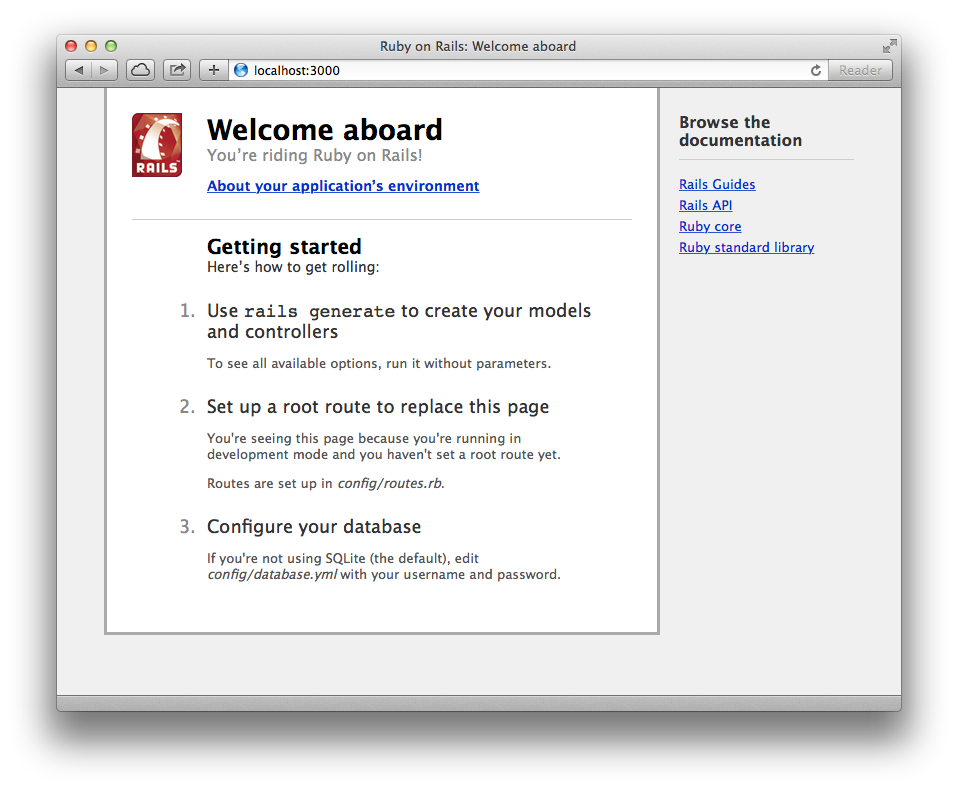
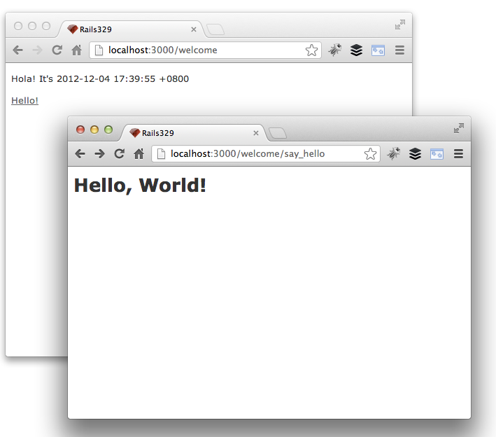
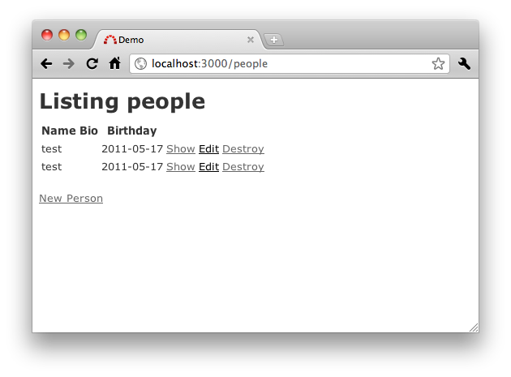

There are two ways of constructing a software design: One way is to make it so simple that there are obviously no deficiencies and the other way is to make it so complicated that there are no obvious deficiencies. - C.A.R. Hoare,
在这一章中，我们将开始介绍如何建立一个最简单的Hello, World!程式，以及用最快速的方式制作CRUD应用。
CRUD指的是Create(新增)、Read(读取)、Update(更新)、Delete(删除)四种操作资料的基本方式。
在上一章安装Rails后，你会在命令行中得到一个rails的指令，这个指令可以初始一个Rails项目目录。
首先请打开一个命令行窗口(Terminal)，然后找个目录适合放你的Rails项目，就说是projects好了：
$ mkdir projects
$ cd projects
接着，输入以下指令就会建立一个叫做demo的Rails项目：
$ rails new demo --skip-test-unit
如果出现建立出来的目录不是demo而是new，表示你的Rails版本是旧版的，请输入
rails -v检查Rails的版本必须是3.0以上。不是的话，请回上一章末执行gem install rails安装Rails 4。
你会看到以下信息显示出总共新增了哪些档案：
create
create README
create Rakefile
create config.ru
create .gitignore
create Gemfile
create app
...(略)...
create vendor/plugins
create vendor/plugins/.gitkeep
这样就建立出demo目录，让我们继续：
$ cd demo
这个目录下包含了一个Rails项目基本会用到的目录结构和档案，让我们简单走访一下，输入ls(Windows读者请输入dir)显示出此目录下的档案：
| 档案/目录 | 用途 |
|---|---|
| Gemfile | 设定Rails应用程序会使用哪些Gems套件 |
| README | 项目说明：你可以用来告诉其他人你的应用程序是做什么用的，如何使用等等。 |
| Rakefile | 用来载入可以被命令行执行的一些Rake任务 |
| app/ | 放Controllers、Models和Views档案，接下来的内容主要都在这个目录。 |
| config/ | 应用程序设定档、路由规则、数据库设定等等 |
| config.ru | 用来启动应用程序的Rack服务器设定档 |
| db/ | 数据库的结构纲要 |
| doc/ | 用来放你的文件 |
| lib/ | 放一些自定的Module和类别档案 |
| log/ | 应用程序的Log记录档 |
| public/ | 唯一可以在网络上看到的目录，这是你的图档、JavaScript、CSS和其他静态档案摆放的地方 |
| bin/ | 放rails这个指令和放其他的script指令 |
| test/ | 单元测试、fixtures及整合测试等程式 |
| tmp/ | 暂时性的档案 |
| vendor/ | 用来放第三方程式码外挂的目录 |
Rails使用了一套叫做Bundler的工具可以帮助我们检查及安装这个Rails应用程序所有依赖的套件，请输入：
$ bundle install
可以只输入
bundle就是bundle install了。 每次有修改Gemfile这个档案，都需要重新执行bundle
会出现
Fetching source index for http://rubygems.org/
...
Your bundle is complete! Use `bundle show [gemname]` to see where a bundled gem is installed.
在开发用的电脑上，我们不需要安装如Apache、IIS的网站服务器。Ruby本身就有提供了HTTP服务器可以执行Rails，要启动它，我们另开启一个指令窗口，cd进到刚刚建立的Rails项目目录然后输入bin/rails server：
$ cd projects/demo
$ bin/rails server
就会出现以下信息：
=> Booting WEBrick
=> Rails 4.2.0 application starting in development on http://0.0.0.0:3000
=> Run `rails server -h` for more startup options
=> Notice: server is listening on all interfaces (0.0.0.0). Consider using 127.0.0.1 (--binding option)
=> Ctrl-C to shutdown server
[2014-10-21 21:38:39] INFO WEBrick 1.3.1
[2014-10-21 21:38:39] INFO ruby 2.1.5p273 (2014-11-13) [x86_64-darwin13.0]
[2014-10-21 21:38:39] INFO WEBrick::HTTPServer#start: pid=42535 port=3000
rails server 可以简写为 rails s
使用Ubuntu操作系统的朋友，如果启动服务器时出现Could not find a JavaScript runtime的错误，请编辑Gemfile这个档案加上一行
gem 'therubyracer'，输入bundle install安装这个套件，然后再启动一次rails server即可。这是因为在Ubuntu操作系统上预设没有任何JavaScript直译器可以给Rails使用。你可以装Node.js或是安装therubyracer这个Ruby套件来获得JavaScript直译器。
接着打开你的浏览器前往http://localhost:3000，我们可以看到Rails的预设首页。这个Welcome Aboard的画面可以确认设定无误，点选About your application’s environment超链接可以看到更多环境信息。

要中断服务器的话，请按Ctrl+C(若不灵光请改试Ctrl+Z)。在development开发模式的话，除了修改config或vender目录下的档案需要重新启动之外，其他修改通常不需要重新启动，修改的档案会自动重新载入。如果是 production正式上线模式的话，修改任何档案都必须重新启动服务器才会有效果。
让程式说Hello World!可是我们学写程式的一大传统。我们提过Rails是MVC框架，显示Hello World!不需要用到数据库，所以我们只要先写Controller和View，以及让路由指派到这个Controller即可，输入以下指令就会产生出一个叫做welcome的空Controller档案：
$ bin/rails generate controller welcome
可以简写为
bin/rails g controller welcome
接下来在路由档案config/routes.rb新增一行设定：
Rails::Application.routes.draw do
get "welcome/say_hello" => "welcome#say"
# ...
end
get这一行的意思是将http://localhost:3000/welcome/say_hello这样的网址对应到welcome Controller的say Action。
编辑app/controllers/welcome_controller.rb，加入一个say方法：
class WelcomeController < ApplicationController
def say
end
end
在Controller中，一个公开函数(public method)就代表一个Action，一个Action对应一个HTTP的请求和回应。接着我们打开浏览器浏览http://localhost:3000/welcome/say_hello，你会看到一个错误如下：
Missing template welcome/say, application/say with {:locale=>[:en], :formats=>[:html], :variants=>[], :handlers=>[:erb, :builder, :raw, :ruby, :coffee, :jbuilder]}. Searched in: * "/Users/ihower/projects/demo/app/views"
这是因为我们还没有准备好View档案。请新增app/views/welcome/say.html.erb这个档案，依照惯例目录名就是Controller名称、档案名是Action名称，第一个附档名说明了这是HTML格式的档案，第二个附档名说明这是ERb样板(我们会在View一章仔细介绍样板)。编辑该档案内容如下：
<h1>Hello, World!</h1>
这时再重新整理一次浏览器，你就会看到Hello, World!了。
让我们再新增一个页面并加入超链接。再次编辑路由档案config/routes.rb加入一个路由，变成这样：
Rails::Application.routes.draw do
get "welcome/say_hello" => "welcome#say"
get "welcome" => "welcome#index"
# ...
end
这一行的意思是将http://localhost:3000/welcome这样的网址对应到welcome Controller的index Action。
编辑app/controllers/welcome_controller.rb加入
class WelcomeController < ApplicationController
#...
def index
end
end
新增app/views/welcome/index.html.erb内容是
<p>Hola! It's <%= Time.now %></p>
<p><%= link_to 'Hello!', welcome_say_hello_path %></p>
Time是Ruby内建的时间类别，Time.now会输出目前时间。link_to是Rails内建的方法可以输出超链接，而welcome_say_hello_path会输出/welcome/say_hello这个网址。这种出现在View中的辅助方法统称作Helper。浏览http://localhost:3000/welcome，将看到Hola!及Hello!超链接。

如何将网站首页变更为welcome#index呢？编辑config/routes.rb，加上以下的程式码，变成这样：
Rails::Application.routes.draw do
get "welcome/say_hello" => "welcome#say"
get "welcome" => "welcome#index"
root :to => "welcome#index"
# ...
end
Ruby的单行註解是用
#井号
这一行的意思是，将网站根目录导引至welcome Controller的index Action。那在View中要怎麼建立回首页的链接呢？编辑app/views/welcome/say.html.erb在Hello, World!下一行加入：
<h1>Hello, World!</h1>
<p><%= link_to "Home", root_path %></p>
如此一来，网页的首页就会显示Hola!和时间，连到http://localhost:3000/welcome/say_hello的时候也会在底下显示一个「Home」的链接，点下去就会回到首页了。
操作数据库是动态网站非常基本的功能，在撰写CRUD应用程序之前，我们必须先设定好数据库。Rails的数据库设定档是config/database.yml，如果你打开这个档案，预设的设定是SQLite3。这个档案裡包含三段不同环境的设定，对应到三个Rails执行环境：
Rails内建支持SQLite这是一套非常轻量的非服务器型数据库程式，它的数据库就只是一个档案而已。流量大的正式上线环境虽然不适合SQLite，不过拿来开发和测试却非常好用。Rails预设也使用SQLite数据库来建立新的项目，以下是预设的设定资料config/database.yml：
# SQLite version 3.x
# gem install sqlite3
#
# Ensure the SQLite 3 gem is defined in your Gemfile
# gem 'sqlite3'
#
default: &default
adapter: sqlite3
pool: 5
timeout: 5000
development:
<<: *default
database: db/development.sqlite3
# Warning: The database defined as "test" will be erased and
# re-generated from your development database when you run "rake".
# Do not set this db to the same as development or production.
test:
<<: *default
database: db/test.sqlite3
production:
<<: *default
database: db/production.sqlite3
中间那段註解告诉你不要把test数据库设成跟production或development同一个
本书接下来也都使用SQLite数据库，因为它完全不需要什么设定就可以使用。
YAML是一种可读性高，用来表达设定资料的资料格式。它严格要求缩排(建议为两个空白)，且冒号后面必须有一个空隔。一般我们会预期YAML的值解析出来是字串，因此如果内容是数字或多行文字时，建议加上引号以避免字串解析错误。例如
password: "123456"。如果没有加上引号，这串数字会被解析成Fixnum对象而不是字串String，后续可能造成型别判断错误。
数据库设定好了，输入以下的指令可以让Rails建立出空的数据库：
$ bin/rake db:create
这将在db/目录下建立出development和test的SQLite3档案。
Rake是一种Ruby的命令行工具，你可以输入
rake -T列出所有可用的指令。我们会在稍后的章节中详细介绍Rake。
Rails的scaffold脚手架功能会自动产生一组Model、Views跟Controller程式码，完成一个简易的CRUD程式以供展示及学习之用。请输入：
$ bin/rails g scaffold person name:string bio:text birthday:date
产生的档案简单说明如下，请注意Model的名称是用单数person，而Controller照RESTful惯例是用复数people：
| db/migrate/20141021135430_create_people.rb | 用来建立people数据库数据表的Migration(你的档案开头名称会有不同的时间) |
| app/models/person.rb | person model档案 |
| app/controllers/people_controller.rb | people controller档案 |
| app/views/people/index.html.erb | 用来显示所有文章的index页面 |
| app/views/people/edit.html.erb | 用来编辑文章的页面 |
| app/views/people/show.html.erb | 用来显示特定一篇文章的页面 |
| app/views/people/new.html.erb | 用来新增文章的页面 |
| app/views/people/_form.html.erb | 用来显示编辑和新增文章的表单局部(Partial)样板 |
| app/helpers/people_helper.rb | 可在文章Views中使用的Helper方法 |
| config/routes.rb | 设定URL路由规则的档案，scaffold再此新增了一行resources :people |
| app/assets/stylesheets/scaffold.css.scss | Scaffold脚手架提供的样式档案 |
| app/assets/stylesheets/people.css.scss | people的CSS样式档案 |
| app/assets/javascripts/people.js.coffee | people的JavaScript档案 |
虽然脚手架(scaffolding)可以帮助你快速上手，但是可没办法产生出完美符合需求的程式码。因此有经验的Rails程式设计师甚少使用预设的脚手架产生程式码，而是偏好使用Rails的generator来分别产生Model和Controller档案，甚至定制出自己专属的scaffold程式。
scaffold产生出来的程式中，有一项是数据库迁移档(database migration)。Migration的用途是建立和修改数据库数据表。Rails使用rake指令来执行Migrations。Migration的档名中包含了Timestamp(时间戳章)，用来确保它们可以依照建立时间依序执行。
请输入以下指令执行Migration：
$ bin/rake db:migrate
Rails这时会建立people数据表：
== Createpeople: migrating ====================================================
-- create_table(:people)
-> 0.0019s
== Createpeople: migrated (0.0020s) ===========================================
因为预设是跑在development模式，这个指令会用config/database.yml设定裡的development那段所指定的数据库。
此时浏览http://localhost:3000/people就可以操作了，十分神奇吧！不过，这里就不详细说明其产生出来的程式码了，读者读毕稍后章节后，自会明白。

NoMethodError非常明显，就是你打错方法名称了，例如此例中把link_to打成link_too。根据错误信息你应该可以很容易找到错误是发生在哪个档案、哪一行。
读取一个不存在、没有初始过的区域变数会出现NameError的错误
SyntaxError加上unexpected $end, expecting keyword_end的话，那一定是你少了(或多了)end关键字，def跟do都必须要有对应的end。不过很可惜Rails没办法提示你是那一行少了(或多了)end，发生错误的行数都会告诉你是最后一行。如果真的不太好找，你可以单独用ruby -w去执行发生错误的程式，例如ruby -w app/controller/welcome_controller，这会打开Ruby的警告模式来获得更準确的语法错误信息。